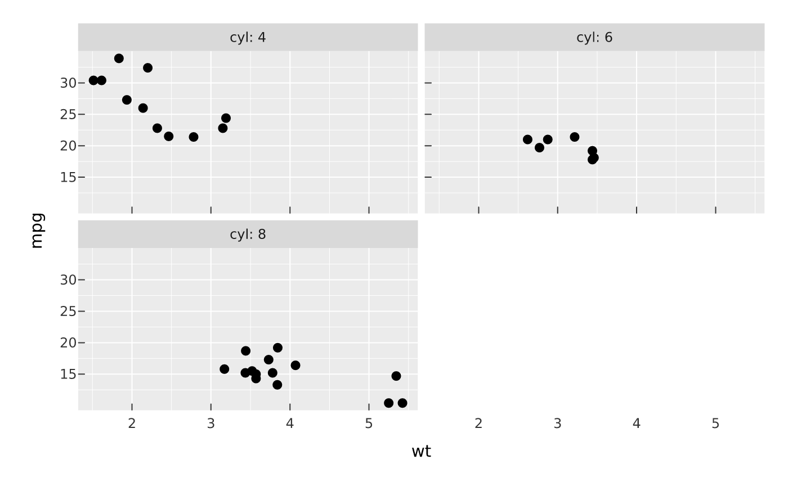
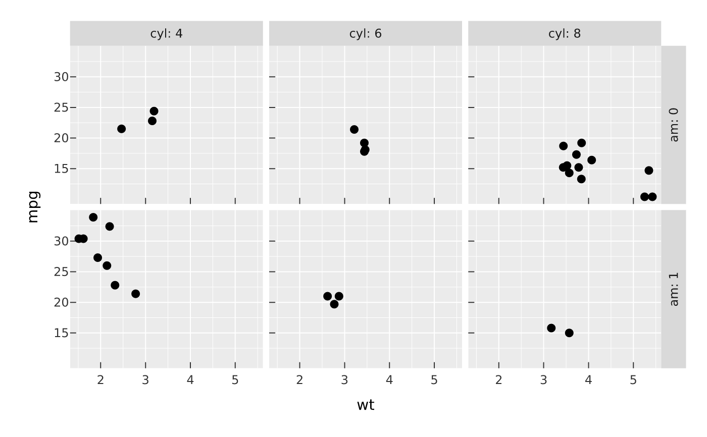
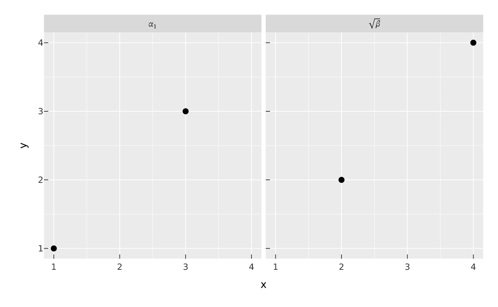
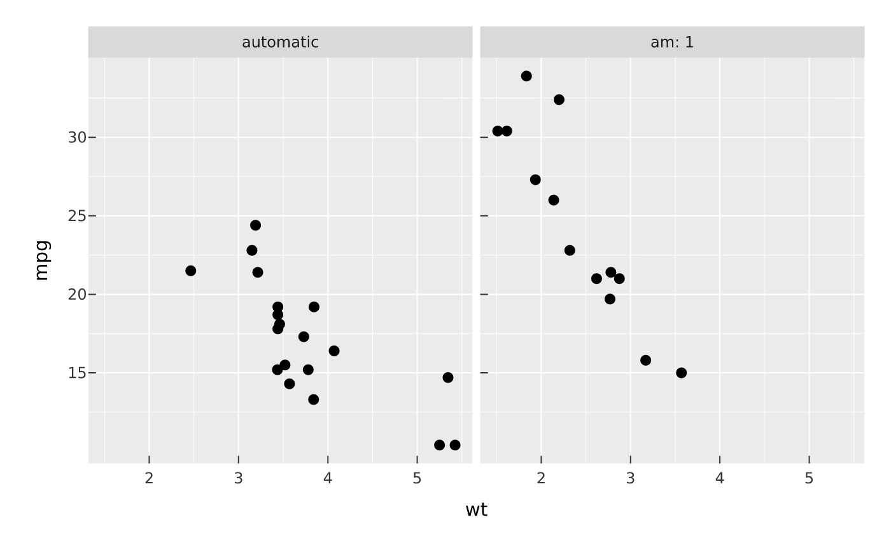

Labellers turn facet values into the text of the facet strips. Pass one as
the labeller argument of facet_wrap() or facet_grid().
Usage
label_value(labels, multi_line = TRUE)
label_both(labels, multi_line = TRUE, sep = ": ")
label_wrap_gen(width = 25, multi_line = TRUE)
as_labeller(x, default = label_value, multi_line = TRUE)Arguments
- labels
A data frame of facet values, one column per facet variable.
- multi_line
Whether each facet variable gets its own line in the strip (
TRUE), or all of them share one line (FALSE).- sep
For
label_both(), the text between the variable name and the value.- width
For
label_wrap_gen(), the maximum number of characters per line.- x
For
as_labeller(), a named character vector (a lookup table from value to label), a function from values to labels, or a labeller (returned as is).- default
For
as_labeller(), the labeller for values a lookup table does not name.
Value
label_value() and label_both() return a list of character
vectors. label_wrap_gen() and as_labeller() return a labeller
function.
Details
label_value()shows the value itself ("4").label_both()shows the variable name and the value ("cyl: 4").label_wrap_gen()returns a labeller that wraps long values onto several lines of at mostwidthcharacters.as_labeller()builds a labeller from a lookup table (a named character vector,c("4" = "Four cylinders")) or from a function that takes the values and returns their labels (toupper). Values the lookup table does not name keep thedefaultlabeller's text.
A named character vector or a plain function can also be passed straight to
labeller =; it goes through as_labeller().
The declarative labellers (label_value, label_both, label_wrap_gen()
and lookup tables over one of those) survive as_spec(); an arbitrary
function does not.
A labeller is a function of one argument, labels: a data frame with one
character column per facet variable (named after it) and one row per strip.
It returns a list of character vectors, one per line of the strip. With
several facet variables on one side, multi_line = TRUE puts each variable
on its own line of the strip, and multi_line = FALSE joins them into one
line, separated by ", ".
Examples
p <- vplot(mtcars) |> mark_point(x = wt, y = mpg)
p |> facet_wrap(~cyl, labeller = label_both)

p |> facet_grid(am ~ cyl, labeller = label_both)

# a lookup table, for one side or both
p |> facet_wrap(~am, labeller = c(`0` = "automatic", `1` = "manual"))

p |> facet_wrap(~am, labeller = as_labeller(c(`0` = "automatic"), label_both))
# long values wrapped onto several lines
df <- data.frame(
x = 1:4,
y = 1:4,
g = rep(c("a rather long group name", "short"), 2)
)
vplot(df) |>
mark_point(x = x, y = y) |>
facet_wrap(~g, labeller = label_wrap_gen(10))
